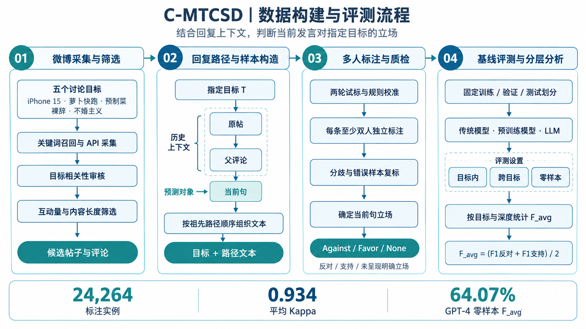

项目概览
C-MTCSD 是发表于 WWW 2025 Companion 的中文多轮对话立场检测数据集与评测工作。项目保留从原帖到当前评论的回复路径，让模型结合讨论目标与前文，判断当前发言的立场。
我以共同第一作者参与数据采集与路径整理、标注规则与质量检查、基线适配和实验分析。项目形成了覆盖五个目标、24,264 条标注实例的数据资源，并开展目标内、跨目标和零样本评测。

背景与问题
立场检测判断的是发言者对某个指定目标的支持或反对态度。社交讨论中的“我同意”“这种做法不行”等回复经常省略目标，需要结合父评论和原帖理解。情绪积极的表达，也可能包含对目标的反对。
| 问题 | 处理方法 |
|---|---|
| 目标隐含、指代省略 | 显式提供目标，并保留原帖到当前评论的祖先路径 |
| 赞同父评论与支持目标容易混淆 | 标注与预测均以最后一句对指定目标的态度为准 |
| 反讽、转述与未表态存在歧义 | 两轮试标、多人独立标注和争议复标 |
| 同目标评测难以反映迁移与深层理解 | 分别进行目标内、跨目标、零样本及深度分组分析 |
既有中文对话资源有限，CANT-CSD 主要覆盖粤语。C-MTCSD 补充普通中文社交讨论，规模约为论文比较对象 CANT-CSD 的 4.2 倍。
方法设计
整体链路分为四个模块：采集与路径整理、标注与质量控制、模型输入与基线评测、指标与分层分析。
| 模块 | 输入 | 输出 |
|---|---|---|
| 采集与整理 | 目标、原帖与回复 | 文本表及有序回复路径 |
| 标注与质检 | 目标、前文与当前句 | Against / Favor / None 标签 |
| 模型评测 | 目标、路径文本与数据划分 | 模型预测及中间分析记录 |
| 结果分析 | 预测结果与真实标签 | F_avg、迁移表现及深度差异 |
每条样本的预测对象是路径最后一个节点。历史节点提供解释当前句所需的上下文，真实标签单独用于评估与结果保存。
模块一：采集与路径整理
步骤 1：选择目标并召回讨论
围绕 iPhone 15（i15）、萝卜快跑（AG）、预制菜（PM）、裸辞（NR）和不婚主义（ND）五个目标，通过关键词检索与微博 API 采集原帖和评论，优先选择讨论较充分的内容，再人工审核目标相关性。
步骤 2：按相关性、互动量和长度筛选
筛选条件包括目标相关、至少 1,000 次互动以及最少 10 words 的内容长度。筛选后的讨论进入路径整理和标注流程。
步骤 3：组织文本表与索引路径
每个目标维护文本表，记录 id、type、text 和 stance；划分文件使用 index 保存有序节点 ID，使用 stance 保存当前句标签。
{
"index": ["1", "1-1", "1-1-2"],
"stance": "favor"
}读取样本时，按索引顺序从文本表取出原帖、中间回复和当前评论。前两个节点构成历史，最后一个节点是预测对象；兄弟分支和后续回复保留在各自路径中。
步骤 4：构造模型输入
将目标单独传入，将路径文本按原有顺序拼接。以 COLA 为例，对话节点用 [SEP] 分隔；模型接收文本，标签进入独立的评估与保存字段。
输出：当前句对目标的 Against / Favor / None 标签
路径深度包含原帖：深度 1 为原帖，深度 6 为包含六个节点的回复路径。一个讨论线程可以产生多条共享部分前文的标注实例。
模块二：标注与质量控制
步骤 1：统一判断对象
标注员同时阅读目标、前置上下文和当前句，先理解回复对象、指代和转述，再判断当前句对目标是反对（Against）、支持（Favor）还是未呈现明确立场（None）。
步骤 2：两轮试标校准规则
10 名具有 NLP 背景的研究人员参与标注，先进行两轮试标，由另外 3 名专家审阅试标结果，统一歧义表达的理解与判断口径。
步骤 3：独立标注与争议复标
每条实例至少由两名标注员独立标注，并检查评论与目标的相关性。对一致性较低或存在明显错误的条目再次标注，形成最终标签。
步骤 4：统计标注一致性
| 目标 | 一致率 | Kappa |
|---|---|---|
| i15 | 0.972 | 0.928 |
| AG | 0.949 | 0.893 |
| PM | 0.994 | 0.985 |
| NR | 0.953 | 0.890 |
| ND | 0.991 | 0.976 |
| 平均 | 0.972 | 0.934 |
一致率衡量标注判断相同的比例；Kappa 进一步考虑随机情况下的预期一致程度。五个目标的平均 Kappa 为 0.934。
模块三：数据划分与基线评测
步骤 1：使用固定训练、验证与测试划分
数据约按 70 / 15 / 15 划分，训练集 17,102 条、验证集 3,664 条、测试集 3,498 条。
| 目标 | Train | Valid | Test | 合计 |
|---|---|---|---|---|
| i15 | 2,826 | 624 | 576 | 4,026 |
| AG | 4,850 | 1,037 | 981 | 6,868 |
| PM | 3,631 | 776 | 789 | 5,196 |
| NR | 2,223 | 473 | 436 | 3,132 |
| ND | 3,572 | 754 | 716 | 5,042 |
| 总计 | 17,102 | 3,664 | 3,498 | 24,264 |
步骤 2：分别设置同目标与迁移评测
- 目标内：使用同一目标对应的训练与测试划分。
- 跨目标：比较 i15→AG、AG→i15、ND→NR、NR→ND、AG→ND 五个有方向的迁移组合。
- 零样本：评估模型在未见目标上的立场判断，结果按目标独立报告。
步骤 3：适配不同类型基线
| 类别 | 方法 |
|---|---|
| 传统神经方法 | TAN、CrossNet |
| 中文预训练模型 | BERT、RoBERTa、XLNet |
| 对比与提示学习 | JointCL、KEPrompt |
| 对话相关方法 | Branch-BERT、GLAN |
| 大模型提示方法 | TSCOT（LLaMA 3 70B、GPT-3.5、GPT-4）；COLA（GPT-3.5） |
预训练模型分别使用 bert-base-chinese、chinese-roberta-wwm-ext 和 chinese-xlnet-base。论文报告四次不同随机初始化独立运行的平均表现。
步骤 4：执行 COLA 六步提示链
COLA 作为已有基线接入，使用同一个 gpt-3.5-turbo 顺序完成六次调用，温度设为 0。
- 语言分析：输入目标与对话，用语言学家角色提取词汇、语法和修辞线索。
- 领域分析：按目标选择交通、食品、科技、社会或职业领域角色，分析实体、事件与目标的关系。
- 社交语境分析：用社交媒体用户角色解释俚语、情绪、话题标签与隐含表达。
- 支持论证：结合原对话和三份分析，在支持假设下提出三条证据。
- 反对论证：使用相同材料，在反对假设下形成竞争论证。
- 最终裁决：输入原对话和正反论证，要求返回 A / B / C，分别对应反对、支持和中立表述；保存裁决文本供结果分析。
每处理一条样本，将目标、输入、真实标签、三类分析、双方论证与裁决写入累计输出文件。真实标签保留在结果记录中，六步推理使用目标和对话文本。
模块四：指标与实验结果
步骤 1：按目标计算 F_avg
任务按三个标签预测，主指标对反对和支持两个类别的 F1 取平均。先分别计算每个目标的 F_avg，再对目标得分取平均。下列表格以百分数展示。
步骤 2：比较目标内结果
GLAN 的五目标平均 F_avg 为 66.10%，XLNet 为 65.33%。
| 模型 | i15 | AG | PM | NR | ND | 平均 |
|---|---|---|---|---|---|---|
| TAN | 35.73 | 36.17 | 5.45 | 41.82 | 33.23 | 30.48 |
| CrossNet | 49.61 | 53.14 | 49.46 | 50.06 | 47.03 | 49.86 |
| BERT | 56.38 | 67.49 | 64.27 | 65.55 | 48.08 | 60.35 |
| RoBERTa | 50.93 | 66.06 | 65.25 | 72.40 | 48.67 | 60.66 |
| XLNet | 61.92 | 71.78 | 64.38 | 75.39 | 53.19 | 65.33 |
| GLAN | 63.20 | 73.05 | 66.52 | 71.45 | 56.27 | 66.10 |
步骤 3：比较跨目标与零样本结果
跨目标实验分别记录五组迁移方向，观察模型对目标变化的适应情况。
| 模型 | i15→AG | AG→i15 | ND→NR | NR→ND | AG→ND |
|---|---|---|---|---|---|
| TAN | 40.84 | 19.55 | 28.68 | 46.74 | 32.58 |
| CrossNet | 31.85 | 33.40 | 35.36 | 41.08 | 32.31 |
| BERT | 34.28 | 39.26 | 35.40 | 31.16 | 31.56 |
| XLNet | 49.69 | 41.82 | 39.92 | 30.29 | 32.92 |
| GLAN | 46.63 | 45.38 | 47.20 | 41.74 | 39.95 |
零样本实验中，GPT-4（TSCOT）的五目标平均 F_avg 为 64.07%，LLaMA 3 70B（TSCOT）为 50.25%，COLA（GPT-3.5）为 42.47%。
| 模型 | i15 | AG | PM | NR | ND | 平均 |
|---|---|---|---|---|---|---|
| TAN | 16.90 | 26.26 | 36.09 | 21.40 | 41.86 | 28.50 |
| CrossNet | 25.60 | 24.94 | 40.58 | 42.48 | 36.63 | 34.05 |
| BERT | 38.91 | 32.06 | 40.98 | 34.86 | 34.20 | 36.20 |
| XLNet | 37.97 | 37.49 | 46.00 | 45.78 | 30.54 | 39.56 |
| GLAN | 41.86 | 40.12 | 43.92 | 46.83 | 33.75 | 41.30 |
| LLaMA 3 70b | 45.95 | 41.67 | 61.35 | 55.82 | 46.46 | 50.25 |
| COLA | 33.14 | 50.37 | 35.67 | 51.77 | 41.39 | 42.47 |
| GPT-3.5 | 54.03 | 37.16 | 48.87 | 50.11 | 37.50 | 45.53 |
| GPT-4 | 61.47 | 54.79 | 62.65 | 81.46 | 60.00 | 64.07 |
步骤 4：按回复路径深度分组
| 深度 | 样本数 | 占比 |
|---|---|---|
| 1（原帖） | 452 | 1.86% |
| 2 | 5,800 | 23.90% |
| 3 | 11,291 | 46.53% |
| 4 | 4,405 | 18.15% |
| 5 | 1,578 | 6.50% |
| 6 | 738 | 3.04% |
深度超过 3 的实例共 6,721 条，占 27.69%。按深度 1–2、3–4、5–6 分组后，iPhone 15 目标的结果如下。
| 方法 | 深度 1–2 | 深度 3–4 | 深度 5–6 | 首末差值 |
|---|---|---|---|---|
| GLAN | 66.91 | 62.30 | 41.74 | −25.17 个百分点 |
| XLNet | 68.09 | 59.25 | 43.13 | −24.96 个百分点 |
| GPT-4 | 68.99 | 57.64 | 41.11 | −27.88 个百分点 |
这些分组揭示了深层回复依赖的处理难度。不同目标与模型的变化存在差异，例如 Branch-BERT 在 PM 的深度 5–6 组达到 88.46，高于其浅层组。分析时结合目标、类别比例和分组样本量一起解读。
项目成果与我的参与
- 数据构建：参与采集筛选与祖先路径整理，形成五个目标、24,264 条标注实例的中文多轮立场数据。
- 标注质检：参与规则校准、标注与质量检查，平均一致率 0.972，平均 Kappa 0.934。
- 模型评测：参与基线适配与目标内、跨目标、零样本实验，使用统一的 F_avg 指标汇总结果。
- 实验分析：参与按目标与深度分组，分析指代、回复关系和隐式表达带来的判断困难。
成果发表于 WWW 2025 Companion，并公开数据资源，为中文上下文立场检测、目标迁移与深层对话建模提供评测依据。
局限与后续方向
数据来自微博的五个目标，讨论语境与类别分布具有平台和议题特征。深层样本较少，深度 5 和 6 分别占 6.50% 和 3.04%，分组得分需要结合样本量理解。
后续可扩展目标与平台覆盖，加强回复关系、指代和反讽建模，并完善大模型裁决的输出解析与错误记录。